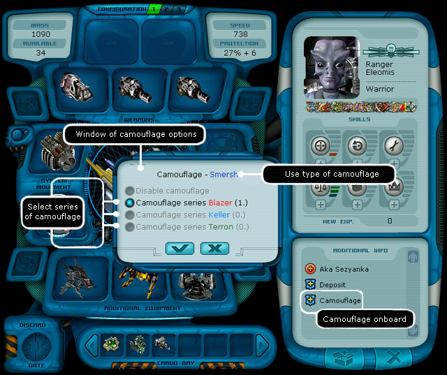
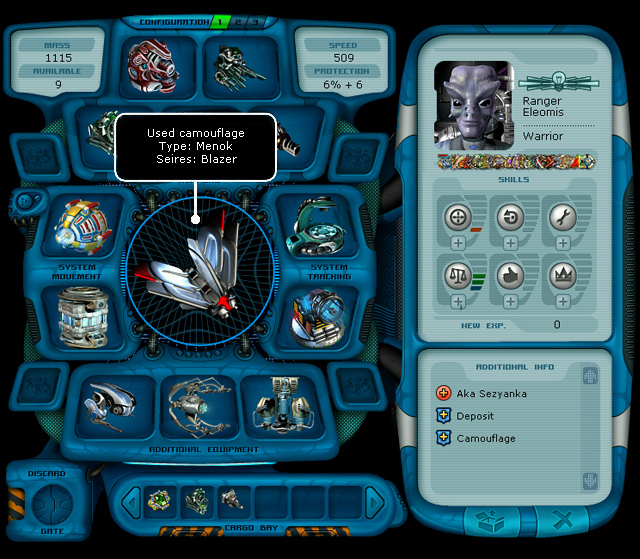
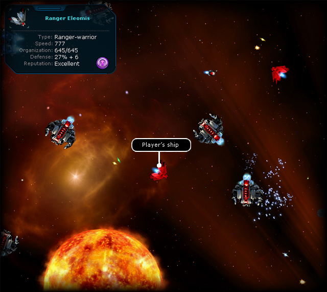

| Camouflage (K) You buy special charges at the pirate base, which you can activate at any moment. Note. After buying a camouflage an icon appears in the information window of your spaceship. It means that your camouflage is charged. Turning the camouflage on: 1. In the ship's window click the hull with the right mouse button or press the K key.  2. Choose the camouflage series in the window of the camouflage control (when several series are available). 3. Confirm the turning on. The hull of ranger's ship becomes a dominator one.  Note. The type of the camouflage used depends on the size of the ship's hull. As soon as the camouflage is on, the pirate ships don't get aggressive towards the player's ship.  Turning the camouflage off: 1. In the ship's window click the hull with the right mouse button or press the K key. 2. In the window of the camouflage control choose the option 'Turn the camouflage off'. 3. Confirm the rutning off. After the activation of the camouflage the player doesn't have an opportunity to blackmail and claim the cargo. The surrounding ships turn negative to the player. The dominators, which correspond to the type of the currently active camouflage, don't attack you. If you get aggressive towards dominators, the camouflage remains, but your presence becomes obvious. |